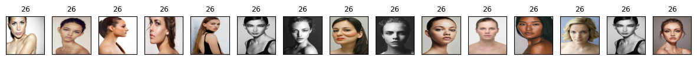
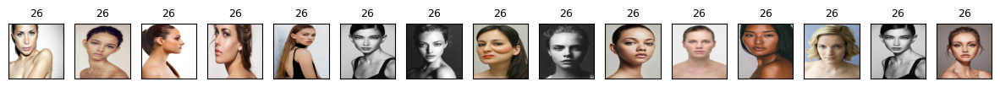

Lecture 02: Clustering class demo#

To run the code below, you need to install pytorch and torchvision in the course conda environment.
conda install pytorch torchvision -c pytorch
import numpy as np
import pandas as pd
import sys
import os
import torch, torchvision
from torchvision import datasets, models, transforms, utils
from PIL import Image
from torchvision import transforms
from torchvision.models import vgg16
import matplotlib.pyplot as plt
sys.path.append(os.path.join(os.path.abspath(".."), "code"))
from plotting_functions import *
Hierarchical clustering on recipes dataset#
Let’s create a dendrogram on a more realistic dataset.
We’ll use Kaggle’s Food.com recipes corpus. This corpus contains 180K+ recipes and 700K+ recipe reviews. In this lab, we’ll only focus on recipes and not on reviews. The recipes are present in RAW_recipes.csv. Our goal is to find categories or groupings of recipes from this corpus based on their names.
orig_recipes_df = pd.read_csv("../data/RAW_recipes.csv")
orig_recipes_df.shape
(231637, 12)
def get_recipes_sample(orig_recipes_df, n_tags=300, min_len=5):
orig_recipes_df = orig_recipes_df.dropna() # Remove rows with NaNs.
orig_recipes_df = orig_recipes_df.drop_duplicates(
"name"
) # Remove rows with duplicate names.
orig_recipes_df = orig_recipes_df[orig_recipes_df["name"].apply(len) >= min_len] # Remove rows where recipe names are too short (< 5 characters).
first_n = orig_recipes_df["tags"].value_counts()[0:n_tags].index.tolist() # Only consider the rows where tags are one of the most frequent n tags.
recipes_df = orig_recipes_df[orig_recipes_df["tags"].isin(first_n)]
return recipes_df
recipes_df = get_recipes_sample(orig_recipes_df)
recipes_df.shape
(9100, 12)
recipes_df["name"]
42 i yam what i yam muffins
101 to your health muffins
129 250 00 chocolate chip cookies
138 lplermagronen
163 california roll salad
...
231430 zucchini wheat germ cookies
231514 zucchini blueberry bread
231547 zucchini salsa burgers
231596 zuppa toscana
231629 zydeco salad
Name: name, Length: 9100, dtype: object
from sentence_transformers import SentenceTransformer
embedder = SentenceTransformer('all-MiniLM-L6-v2')
/Users/kvarada/miniconda3/envs/563/lib/python3.11/site-packages/torch/_utils.py:831: UserWarning:
TypedStorage is deprecated. It will be removed in the future and UntypedStorage will be the only storage class. This should only matter to you if you are using storages directly. To access UntypedStorage directly, use tensor.untyped_storage() instead of tensor.storage()
recipe_names = recipes_df["name"].tolist()
embeddings = embedder.encode(recipe_names)
recipe_names_embeddings = pd.DataFrame(
embeddings,
index=recipes_df.index,
)
recipe_names_embeddings
| 0 | 1 | 2 | 3 | 4 | 5 | 6 | 7 | 8 | 9 | ... | 374 | 375 | 376 | 377 | 378 | 379 | 380 | 381 | 382 | 383 | |
|---|---|---|---|---|---|---|---|---|---|---|---|---|---|---|---|---|---|---|---|---|---|
| 42 | 0.019592 | -0.088336 | 0.072677 | -0.034575 | -0.048741 | -0.049801 | 0.175334 | -0.055191 | 0.020301 | 0.019828 | ... | 0.063293 | -0.067171 | 0.087499 | -0.061550 | 0.039297 | -0.050147 | 0.027708 | 0.056843 | 0.056151 | -0.122506 |
| 101 | -0.000567 | -0.011825 | 0.073199 | 0.058175 | 0.031688 | -0.015428 | 0.168134 | 0.000466 | 0.033078 | -0.013923 | ... | -0.012926 | -0.015949 | 0.031315 | -0.059074 | 0.014143 | -0.047270 | 0.007844 | 0.035501 | 0.076061 | -0.078119 |
| 129 | -0.022604 | 0.065034 | -0.033065 | 0.014450 | -0.105039 | -0.050559 | 0.100076 | 0.022929 | -0.037398 | 0.011857 | ... | 0.007971 | -0.019165 | 0.004935 | 0.009005 | 0.000919 | -0.040078 | 0.008650 | -0.075781 | -0.083477 | -0.123240 |
| 138 | -0.066915 | 0.025988 | -0.087689 | -0.006847 | -0.012861 | 0.049035 | 0.035351 | 0.124966 | -0.011697 | -0.050179 | ... | -0.042345 | -0.005794 | -0.031800 | 0.120664 | -0.057335 | -0.077068 | 0.001653 | -0.048223 | 0.116455 | 0.021789 |
| 163 | -0.007068 | -0.007308 | -0.026629 | -0.004153 | -0.052810 | 0.011126 | 0.024000 | -0.036993 | 0.023526 | -0.046870 | ... | -0.018432 | 0.051918 | 0.036102 | -0.035312 | 0.005817 | 0.101802 | -0.063171 | -0.007917 | 0.089744 | 0.006997 |
| ... | ... | ... | ... | ... | ... | ... | ... | ... | ... | ... | ... | ... | ... | ... | ... | ... | ... | ... | ... | ... | ... |
| 231430 | -0.036366 | 0.087173 | -0.039641 | 0.002705 | 0.097142 | -0.075385 | 0.068207 | 0.010435 | -0.069214 | 0.010464 | ... | 0.050988 | -0.064541 | 0.090829 | -0.004570 | 0.079109 | 0.019663 | -0.058483 | -0.048723 | 0.019152 | -0.012266 |
| 231514 | -0.052718 | 0.008980 | -0.046014 | 0.030194 | 0.005201 | 0.009964 | -0.006760 | 0.030238 | -0.031474 | 0.024632 | ... | 0.075467 | 0.000967 | 0.085033 | -0.006520 | 0.031094 | 0.072901 | -0.094975 | -0.052466 | -0.003300 | -0.006991 |
| 231547 | -0.080801 | 0.004295 | -0.044325 | 0.038307 | -0.030125 | -0.063566 | 0.004788 | 0.004822 | 0.015525 | -0.040094 | ... | 0.066642 | 0.016605 | 0.096211 | -0.023969 | 0.045752 | 0.017091 | -0.062939 | -0.016950 | 0.012060 | 0.039776 |
| 231596 | -0.060801 | 0.111672 | -0.108755 | 0.052323 | -0.099851 | -0.027532 | 0.084190 | -0.004861 | 0.002891 | 0.013944 | ... | 0.038082 | -0.014214 | 0.048392 | 0.050377 | 0.015281 | 0.106766 | 0.032009 | 0.020113 | 0.004977 | -0.005828 |
| 231629 | -0.085059 | 0.009065 | -0.088442 | -0.008907 | 0.002233 | -0.055801 | 0.039431 | -0.037784 | 0.005315 | -0.078361 | ... | 0.063838 | 0.035654 | 0.031519 | -0.006411 | 0.007804 | 0.016261 | -0.006218 | 0.016956 | 0.019806 | -0.042820 |
9100 rows × 384 columns
def plot_dendrogram(Z, labels, w=15, h=20, p=10):
fig, ax = plt.subplots(figsize=(w, h))
dendrogram(
Z,
p=p,
truncate_mode="level",
orientation="left",
leaf_font_size=12,
labels=labels,
ax=ax,
)
ax = plt.gca()
ax.set_ylabel("Cluster distances", fontsize=w)
from scipy.cluster.hierarchy import dendrogram, linkage
recipe_names = recipes_df["name"].tolist()
Z = linkage(embeddings, method="complete", metric="cosine")
plot_dendrogram(Z, labels=recipe_names, w=15, h=230, p=10)
Let’s cluster images!!#
For this demo, I’m going to use the following image dataset:
A tiny subset of Food-101 from last lecture (available here).
A small subset of Human Faces dataset (available here).
Let’s start with small subset of birds dataset. You can experiment with a bigger dataset if you like.
device = torch.device("cuda:0" if torch.cuda.is_available() else "cpu")
import random
def set_seed(seed=42):
torch.manual_seed(seed)
np.random.seed(seed)
random.seed(seed)
set_seed(seed=42)
import glob
IMAGE_SIZE = 224
def read_img_dataset(data_dir, BATCH_SIZE):
data_transforms = transforms.Compose(
[
transforms.Resize((IMAGE_SIZE, IMAGE_SIZE)),
transforms.ToTensor(),
transforms.Normalize([0.5, 0.5, 0.5], [0.5, 0.5, 0.5]),
])
image_dataset = datasets.ImageFolder(root=data_dir, transform=data_transforms)
dataloader = torch.utils.data.DataLoader(
image_dataset, batch_size=BATCH_SIZE, shuffle=True, num_workers=0
)
dataset_size = len(image_dataset)
class_names = image_dataset.classes
inputs, classes = next(iter(dataloader))
return inputs, classes
def plot_sample_imgs(inputs):
plt.figure(figsize=(10, 70)); plt.axis("off"); plt.title("Sample Training Images")
plt.imshow(np.transpose(utils.make_grid(inputs, padding=1, normalize=True),(1, 2, 0)));
def get_features(model, inputs):
"""Extract output of densenet model"""
model.eval()
with torch.no_grad(): # turn off computational graph stuff
Z = model(inputs).detach().numpy()
return Z
densenet = models.densenet121(weights="DenseNet121_Weights.IMAGENET1K_V1")
densenet.classifier = torch.nn.Identity() # remove that last "classification" layer
data_dir = "../data/food"
file_names = [image_file for image_file in glob.glob(data_dir + "/*/*.jpg")]
n_images = len(file_names)
BATCH_SIZE = n_images # because our dataset is quite small
food_inputs, food_classes = read_img_dataset(data_dir, BATCH_SIZE)
n_images
350
X_food = food_inputs.numpy()
plot_sample_imgs(food_inputs[0:24,:,:,:])
Z_food = get_features(
densenet, food_inputs,
)
Z_food.shape
(350, 1024)
from sklearn.cluster import KMeans
k = 7
km = KMeans(n_clusters=k, n_init='auto', random_state=123)
km.fit(Z_food)
huggingface/tokenizers: The current process just got forked, after parallelism has already been used. Disabling parallelism to avoid deadlocks...
To disable this warning, you can either:
- Avoid using `tokenizers` before the fork if possible
- Explicitly set the environment variable TOKENIZERS_PARALLELISM=(true | false)
KMeans(n_clusters=7, random_state=123)In a Jupyter environment, please rerun this cell to show the HTML representation or trust the notebook.
On GitHub, the HTML representation is unable to render, please try loading this page with nbviewer.org.
KMeans(n_clusters=7, random_state=123)
for cluster in range(k):
get_cluster_images(km, Z_food, X_food, cluster, n_img=6)
82
Image indices: [ 82 334 265 35 114 343]
276
Image indices: [276 191 186 29 265 343]
161
Image indices: [161 102 190 241 56 76]
76
Image indices: [ 76 39 259 295 313 138]
124
Image indices: [124 253 25 27 223 280]
214
Image indices: [214 20 141 249 203 274]
48
Image indices: [ 48 76 61 5 89 138]
Let’s try DBSCAN.
dbscan = DBSCAN()
labels = dbscan.fit_predict(Z_food)
print("Unique labels: {}".format(np.unique(labels)))
Unique labels: [-1]
It identified all points as noise points. Let’s explore the distances between points.
from sklearn.metrics.pairwise import euclidean_distances
dists = euclidean_distances(Z_food)
np.fill_diagonal(dists, np.inf)
dists_df = pd.DataFrame(dists)
dists_df
| 0 | 1 | 2 | 3 | 4 | 5 | 6 | 7 | 8 | 9 | ... | 340 | 341 | 342 | 343 | 344 | 345 | 346 | 347 | 348 | 349 | |
|---|---|---|---|---|---|---|---|---|---|---|---|---|---|---|---|---|---|---|---|---|---|
| 0 | inf | 27.170055 | 23.031958 | 29.344772 | 27.464478 | 25.905247 | 28.601202 | 27.226376 | 27.482912 | 27.221527 | ... | 27.895399 | 28.627733 | 28.157883 | 24.296227 | 27.864172 | 26.458879 | 28.636673 | 23.513233 | 26.565342 | 27.202257 |
| 1 | 27.170055 | inf | 22.623018 | 24.378826 | 25.491858 | 21.179714 | 25.291124 | 22.400305 | 17.118834 | 23.523634 | ... | 22.605633 | 19.422020 | 22.297943 | 20.873520 | 24.695148 | 23.107439 | 21.258476 | 19.471344 | 20.257626 | 22.101439 |
| 2 | 23.031958 | 22.623018 | inf | 28.764128 | 25.544815 | 23.159748 | 26.158796 | 23.423162 | 23.352556 | 25.552362 | ... | 26.763517 | 25.627247 | 27.411243 | 22.771503 | 24.695318 | 25.684536 | 26.029621 | 20.417007 | 21.786676 | 22.903088 |
| 3 | 29.344772 | 24.378826 | 28.764128 | inf | 28.520514 | 23.345848 | 28.131292 | 27.448324 | 24.425114 | 19.679522 | ... | 22.209078 | 26.940432 | 26.980904 | 25.166636 | 27.609043 | 21.547798 | 26.480221 | 24.750486 | 25.170488 | 26.520864 |
| 4 | 27.464478 | 25.491858 | 25.544815 | 28.520514 | inf | 21.172094 | 26.477962 | 23.458080 | 24.881802 | 26.123205 | ... | 26.482220 | 24.862627 | 26.194000 | 22.634821 | 26.464811 | 25.304203 | 25.343525 | 23.945744 | 23.584085 | 25.460310 |
| ... | ... | ... | ... | ... | ... | ... | ... | ... | ... | ... | ... | ... | ... | ... | ... | ... | ... | ... | ... | ... | ... |
| 345 | 26.458879 | 23.107439 | 25.684536 | 21.547798 | 25.304203 | 22.533878 | 26.831320 | 24.927713 | 22.792896 | 21.153379 | ... | 20.873121 | 24.183710 | 25.783279 | 23.444519 | 25.757414 | inf | 24.095846 | 22.627157 | 24.188881 | 24.653481 |
| 346 | 28.636673 | 21.258476 | 26.029621 | 26.480221 | 25.343525 | 21.611740 | 26.205790 | 25.979347 | 20.662193 | 23.817635 | ... | 22.648520 | 21.091978 | 21.743126 | 23.498369 | 27.345230 | 24.095846 | inf | 22.860321 | 24.492981 | 25.513124 |
| 347 | 23.513233 | 19.471344 | 20.417007 | 24.750486 | 23.945744 | 19.392580 | 23.914526 | 22.881351 | 20.868404 | 23.173368 | ... | 23.511854 | 23.249800 | 23.443996 | 17.126703 | 22.055307 | 22.627157 | 22.860321 | inf | 18.786024 | 18.716606 |
| 348 | 26.565342 | 20.257626 | 21.786676 | 25.170488 | 23.584085 | 19.035461 | 22.507235 | 21.890001 | 18.954796 | 24.086979 | ... | 24.703278 | 22.101397 | 23.019146 | 18.728832 | 22.244553 | 24.188881 | 24.492981 | 18.786024 | inf | 22.293314 |
| 349 | 27.202257 | 22.101439 | 22.903088 | 26.520864 | 25.460310 | 21.709154 | 24.901806 | 24.091803 | 23.649529 | 25.744678 | ... | 26.223890 | 25.669901 | 25.911032 | 18.624907 | 25.121590 | 24.653481 | 25.513124 | 18.716606 | 22.293314 | inf |
350 rows × 350 columns
dists.min(), np.nanmax(dists[dists != np.inf]), np.mean(dists[dists != np.inf])
(10.067173, 36.652683, 24.538565)
for eps in range(13, 20):
print("\neps={}".format(eps))
dbscan = DBSCAN(eps=eps, min_samples=3)
labels = dbscan.fit_predict(Z_food)
print("Number of clusters: {}".format(len(np.unique(labels))))
print("Cluster sizes: {}".format(np.bincount(labels + 1)))
eps=13
Number of clusters: 2
Cluster sizes: [347 3]
eps=14
Number of clusters: 5
Cluster sizes: [334 3 6 4 3]
eps=15
Number of clusters: 4
Cluster sizes: [299 26 8 17]
eps=16
Number of clusters: 4
Cluster sizes: [248 86 3 13]
eps=17
Number of clusters: 2
Cluster sizes: [205 145]
eps=18
Number of clusters: 2
Cluster sizes: [160 190]
eps=19
Number of clusters: 2
Cluster sizes: [116 234]
dbscan = DBSCAN(eps=14, min_samples=3)
dbscan_labels = dbscan.fit_predict(Z_food)
print("Number of clusters: {}".format(len(np.unique(dbscan_labels))))
print("Cluster sizes: {}".format(np.bincount(dbscan_labels + 1)))
print("Unique labels: {}".format(np.unique(dbscan_labels)))
Number of clusters: 5
Cluster sizes: [334 3 6 4 3]
Unique labels: [-1 0 1 2 3]
print_dbscan_clusters(Z_food, food_inputs, dbscan_labels)

Let’s examine noise points identified by DBSCAN.
print_dbscan_noise_images(Z_food, food_inputs, dbscan_labels)
Now let’s try another dataset with human faces, a small subset of Human Faces dataset (available here).
data_dir = "../data/people"
file_names = [image_file for image_file in glob.glob(data_dir + "/*/*.jpg")]
n_images = len(file_names)
BATCH_SIZE = n_images # because our dataset is quite small
faces_inputs, classes = read_img_dataset(data_dir, BATCH_SIZE)
n_images
367
X_faces = faces_inputs.numpy()
X_faces.shape
(367, 3, 224, 224)
plot_sample_imgs(faces_inputs[0:24,:,:,:])
Z_faces = get_features(
densenet, faces_inputs,
)
Z_faces.shape
(367, 1024)
from sklearn.cluster import KMeans
k = 7
km = KMeans(n_clusters=k, n_init='auto', random_state=123)
km.fit(Z_faces)
KMeans(n_clusters=7, random_state=123)In a Jupyter environment, please rerun this cell to show the HTML representation or trust the notebook.
On GitHub, the HTML representation is unable to render, please try loading this page with nbviewer.org.
KMeans(n_clusters=7, random_state=123)
km.cluster_centers_.shape
(7, 1024)
for cluster in range(k):
get_cluster_images(km, Z_faces, X_faces, cluster, n_img=6)
128
Image indices: [128 146 67 10 18 56]
67
Image indices: [146 67 210 241 321 24]
92
Image indices: [211 92 331 170 0 274]
272
Image indices: [272 28 249 38 87 243]
150
Image indices: [150 193 320 308 302 105]
318
Image indices: [318 83 109 366 36 272]
362
Image indices: [362 164 242 42 69 186]
Clustering faces with DBSCAN#
dbscan = DBSCAN()
labels = dbscan.fit_predict(Z_faces)
print("Unique labels: {}".format(np.unique(labels)))
Unique labels: [-1]
dists = euclidean_distances(Z_faces)
np.fill_diagonal(dists, np.inf)
dist_df = pd.DataFrame(
dists
)
dist_df.iloc[10:20, 10:20]
| 10 | 11 | 12 | 13 | 14 | 15 | 16 | 17 | 18 | 19 | |
|---|---|---|---|---|---|---|---|---|---|---|
| 10 | inf | 14.686935 | 21.547512 | 13.875407 | 18.288515 | 12.808964 | 20.555487 | 16.590254 | 9.884141 | 14.243562 |
| 11 | 14.686935 | inf | 20.484268 | 16.409140 | 16.682758 | 15.932351 | 21.362122 | 17.187832 | 14.117254 | 15.732210 |
| 12 | 21.547512 | 20.484268 | inf | 21.281721 | 21.584352 | 21.747551 | 22.890703 | 15.583789 | 20.823399 | 18.850285 |
| 13 | 13.875407 | 16.409140 | 21.281721 | inf | 19.584244 | 14.986351 | 24.546141 | 20.170977 | 12.813548 | 16.071207 |
| 14 | 18.288515 | 16.682758 | 21.584352 | 19.584244 | inf | 16.372135 | 22.501001 | 19.135139 | 18.132500 | 18.606798 |
| 15 | 12.808964 | 15.932351 | 21.747551 | 14.986351 | 16.372135 | inf | 22.083078 | 17.554756 | 12.090057 | 14.520963 |
| 16 | 20.555487 | 21.362122 | 22.890703 | 24.546141 | 22.501001 | 22.083078 | inf | 17.042555 | 21.822445 | 20.690748 |
| 17 | 16.590254 | 17.187832 | 15.583789 | 20.170977 | 19.135139 | 17.554756 | 17.042555 | inf | 17.113522 | 16.881115 |
| 18 | 9.884141 | 14.117254 | 20.823399 | 12.813548 | 18.132500 | 12.090057 | 21.822445 | 17.113522 | inf | 14.368977 |
| 19 | 14.243562 | 15.732210 | 18.850285 | 16.071207 | 18.606798 | 14.520963 | 20.690748 | 16.881115 | 14.368977 | inf |
dists.min(), np.nanmax(dists[dists != np.inf]), np.mean(dists[dists != np.inf])
(0.0, 32.12697, 18.71584)
for eps in [8, 9, 10, 11, 12, 13, 14, 15, 16, 17]:
print("\neps={}".format(eps))
dbscan = DBSCAN(eps=eps, min_samples=3)
labels = dbscan.fit_predict(Z_faces)
print("Number of clusters: {}".format(len(np.unique(labels))))
print("Cluster sizes: {}".format(np.bincount(labels + 1)))
eps=8
Number of clusters: 6
Cluster sizes: [352 3 3 3 3 3]
eps=9
Number of clusters: 9
Cluster sizes: [340 3 3 3 3 6 3 3 3]
eps=10
Number of clusters: 10
Cluster sizes: [299 17 15 16 3 4 3 3 3 4]
eps=11
Number of clusters: 6
Cluster sizes: [226 128 4 3 3 3]
eps=12
Number of clusters: 3
Cluster sizes: [164 200 3]
eps=13
Number of clusters: 2
Cluster sizes: [115 252]
eps=14
Number of clusters: 2
Cluster sizes: [ 87 280]
eps=15
Number of clusters: 3
Cluster sizes: [ 62 299 6]
eps=16
Number of clusters: 3
Cluster sizes: [ 37 327 3]
eps=17
Number of clusters: 2
Cluster sizes: [ 25 342]
dbscan = DBSCAN(eps=10, min_samples=3)
dbscan_labels = dbscan.fit_predict(Z_faces)
print("Number of clusters: {}".format(len(np.unique(dbscan_labels))))
print("Cluster sizes: {}".format(np.bincount(dbscan_labels + 1)))
print("Unique labels: {}".format(np.unique(dbscan_labels)))
Number of clusters: 10
Cluster sizes: [299 17 15 16 3 4 3 3 3 4]
Unique labels: [-1 0 1 2 3 4 5 6 7 8]
print_dbscan_clusters(Z_faces, faces_inputs, dbscan_labels)

Let’s examine noise images identified by DBSCAN.
print_dbscan_noise_images(Z_faces, faces_inputs, dbscan_labels)
We can guess why these images are noise images. There are odd angles, cropping, sun glasses, hands near faces etc.
Hierarchical clustering#
set_seed(seed=42)
plt.figure(figsize=(20, 15))
Z_hrch = ward(Z_faces)
dendrogram(Z_hrch, p=7, truncate_mode="level", no_labels=True)
plt.xlabel("Sample index")
plt.ylabel("Cluster distance");
cluster_labels = fcluster(Z_hrch, 30, criterion="maxclust") # let's get flat clusters
plt.close()
hand_picked_clusters = np.arange(2, 30)
#hand_picked_clusters = [2, 3, 5, 6,7, 8, 9, 10, 12, 14,15,16,17,19,20, 21,22, 24, 26, 27, 28]
print_hierarchical_clusters(
faces_inputs, Z_faces, cluster_labels, hand_picked_clusters
)
/Users/kvarada/MDS/2023-24/563/DSCI_563_unsup-learn_students/lectures/code/plotting_functions.py:1480: RuntimeWarning:
More than 20 figures have been opened. Figures created through the pyplot interface (`matplotlib.pyplot.figure`) are retained until explicitly closed and may consume too much memory. (To control this warning, see the rcParam `figure.max_open_warning`). Consider using `matplotlib.pyplot.close()`.
 

Some clusters correspond to people with distinct faces, age, facial expressions, hair colour and hair style, lighting and skin tone.